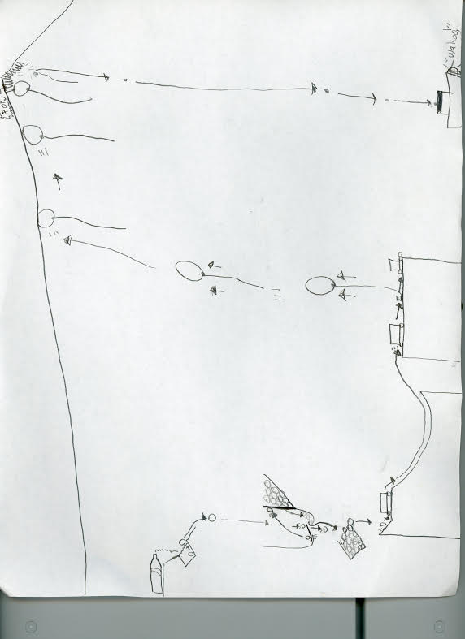

A full bottle of water falls over and begins to fill up a small box with a ball in it. The box overflows with water causing the ball to fall out of the box and onto a slightly inclined platform. The ball rolls off of the slightly inclined platform. It falls down a funnel and triggers a see-saw that launches a different ball into the air. The first ball falls into a box underneath the funnel. The second ball hits a trapdoor attached on the upper right side of the funnel which releases tons more balls that fall down the funnel and into the box. The box fills with balls until the first ball overflows which falls and hits a toy car into motion. The toy car goes down a ramp and launches up into the air and onto a table. The car hits and displaces a small rock that is keeping a balloon from rising. The balloon rises until it hits the ceiling which is slightly inclined to the right. It continues to rise along the ceiling until it reaches a sharp edge at the top of the ceiling causing it to pop and drop a tiny pebble that was inside of it. The pebble falls and hits a button on the ground which causes an audio recording to play that says: “Wahoo”.



